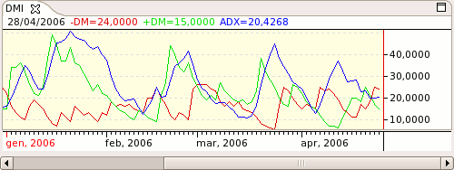

Directional Movement Index - DMI

Parameters
- Name: The text that identifies the indicator
- Color: Average directional index (ADX) color
- Period: The period used for the DMI
- Smoothing Period: The period used for smoothing the ADX
- Smoothing Average Type: The type of MA to use for smoothing the ADX
- Standard Deviations: The standard deviations used for the upper and lower bands
- Positive Line Color: Positive directional movement (+DM) color
- Negative Line Color: Positive directional movement (-DM) color